Last updated: 2025-09-11
Checks: 7 0
Knit directory:
paediatric-cf-inflammation-citeseq/
This reproducible R Markdown analysis was created with workflowr (version 1.7.1). The Checks tab describes the reproducibility checks that were applied when the results were created. The Past versions tab lists the development history.
Great! Since the R Markdown file has been committed to the Git repository, you know the exact version of the code that produced these results.
Great job! The global environment was empty. Objects defined in the global environment can affect the analysis in your R Markdown file in unknown ways. For reproduciblity it’s best to always run the code in an empty environment.
The command set.seed(20240216) was run prior to running
the code in the R Markdown file. Setting a seed ensures that any results
that rely on randomness, e.g. subsampling or permutations, are
reproducible.
Great job! Recording the operating system, R version, and package versions is critical for reproducibility.
Nice! There were no cached chunks for this analysis, so you can be confident that you successfully produced the results during this run.
Great job! Using relative paths to the files within your workflowr project makes it easier to run your code on other machines.
Great! You are using Git for version control. Tracking code development and connecting the code version to the results is critical for reproducibility.
The results in this page were generated with repository version 8e7e05d. See the Past versions tab to see a history of the changes made to the R Markdown and HTML files.
Note that you need to be careful to ensure that all relevant files for
the analysis have been committed to Git prior to generating the results
(you can use wflow_publish or
wflow_git_commit). workflowr only checks the R Markdown
file, but you know if there are other scripts or data files that it
depends on. Below is the status of the Git repository when the results
were generated:
Ignored files:
Ignored: .Rhistory
Ignored: .Rproj.user/
Ignored: analysis/.DS_Store
Ignored: code/obsolete/
Ignored: data/.DS_Store
Ignored: data/C133_Neeland_batch0/
Ignored: data/C133_Neeland_batch1/
Ignored: data/C133_Neeland_batch2/
Ignored: data/C133_Neeland_batch3/
Ignored: data/C133_Neeland_batch4/
Ignored: data/C133_Neeland_batch5/
Ignored: data/C133_Neeland_batch6/
Ignored: data/C133_Neeland_merged/
Ignored: data/Neeland_processed_data_1.h5ad
Ignored: data/Neeland_processed_data_2.h5ad
Ignored: data/Neeland_processed_data_3.h5ad
Ignored: data/intermediate_objects/.DS_Store
Ignored: data/updated_h5ad_files/
Ignored: renv/library/
Ignored: renv/staging/
Untracked files:
Untracked: analysis/14.2_DGE_analysis_ciliated-epithelial-cells.Rmd
Untracked: analysis/cellxgene_submission.Rmd
Untracked: analysis/epithelial_cell_analysis.Rmd
Untracked: analysis/epithelial_cell_analysis.nb.html
Untracked: data/GOBP_CYTOKINE_MEDIATED_SIGNALING_PATHWAY.v2025.1.Hs.tsv
Untracked: data/cellxgene_cell_ontologies_ann_level_3.xlsx
Untracked: data/gencode.v44.primary_assembly.annotation.gtf
Untracked: output/dge_analysis/epithelial cells/
Untracked: output/pdf_figures/
Unstaged changes:
Modified: .DS_Store
Modified: analysis/13.0_DGE_analysis_macrophages.Rmd
Modified: analysis/13.1_DGE_analysis_macro-alveolar.Rmd
Modified: analysis/13.2_DGE_analysis_macro-APOC2+.Rmd
Modified: analysis/13.3_DGE_analysis_macro-CCL.Rmd
Modified: analysis/13.4_DGE_analysis_macro-IFI27.Rmd
Modified: analysis/13.5_DGE_analysis_macro-lipid.Rmd
Modified: analysis/13.6_DGE_analysis_macro-monocyte-derived.Rmd
Modified: analysis/13.7_DGE_analysis_macro-proliferating.Rmd
Modified: analysis/14.0_DGE_analysis_CD4-T-cells.Rmd
Modified: analysis/14.1_DGE_analysis_CD8-T-cells.Rmd
Modified: analysis/14.2_DGE_analysis_DC-cells.Rmd
Modified: data/intermediate_objects/macrophages.CF_samples.fit.rds
Modified: data/intermediate_objects/macrophages.all_samples.fit.rds
Modified: output/dge_analysis/macrophages/CAM.FIBROSIS.CF.IVAvCF.NO_MOD.csv
Modified: output/dge_analysis/macrophages/CAM.FIBROSIS.CF.IVAvNON_CF.CTRL.csv
Modified: output/dge_analysis/macrophages/CAM.FIBROSIS.CF.LUMA_IVAvCF.NO_MOD.csv
Modified: output/dge_analysis/macrophages/CAM.FIBROSIS.CF.NO_MOD.SvCF.NO_MOD.M.csv
Modified: output/dge_analysis/macrophages/CAM.FIBROSIS.CF.NO_MODvNON_CF.CTRL.csv
Modified: output/dge_analysis/macrophages/CAM.GO.CF.IVAvCF.NO_MOD.csv
Modified: output/dge_analysis/macrophages/CAM.GO.CF.IVAvNON_CF.CTRL.csv
Modified: output/dge_analysis/macrophages/CAM.GO.CF.LUMA_IVAvCF.NO_MOD.csv
Modified: output/dge_analysis/macrophages/CAM.GO.CF.NO_MOD.SvCF.NO_MOD.M.csv
Modified: output/dge_analysis/macrophages/CAM.GO.CF.NO_MODvNON_CF.CTRL.csv
Modified: output/dge_analysis/macrophages/CAM.HALLMARK.CF.IVAvCF.NO_MOD.csv
Modified: output/dge_analysis/macrophages/CAM.HALLMARK.CF.IVAvNON_CF.CTRL.csv
Modified: output/dge_analysis/macrophages/CAM.HALLMARK.CF.LUMA_IVAvCF.NO_MOD.csv
Modified: output/dge_analysis/macrophages/CAM.HALLMARK.CF.NO_MOD.SvCF.NO_MOD.M.csv
Modified: output/dge_analysis/macrophages/CAM.HALLMARK.CF.NO_MODvNON_CF.CTRL.csv
Modified: output/dge_analysis/macrophages/CAM.REACTOME.CF.IVAvCF.NO_MOD.csv
Modified: output/dge_analysis/macrophages/CAM.REACTOME.CF.IVAvNON_CF.CTRL.csv
Modified: output/dge_analysis/macrophages/CAM.REACTOME.CF.LUMA_IVAvCF.NO_MOD.csv
Modified: output/dge_analysis/macrophages/CAM.REACTOME.CF.NO_MOD.SvCF.NO_MOD.M.csv
Modified: output/dge_analysis/macrophages/CAM.REACTOME.CF.NO_MODvNON_CF.CTRL.csv
Modified: output/dge_analysis/macrophages/CAM.WP.CF.IVAvCF.NO_MOD.csv
Modified: output/dge_analysis/macrophages/CAM.WP.CF.IVAvNON_CF.CTRL.csv
Modified: output/dge_analysis/macrophages/CAM.WP.CF.LUMA_IVAvCF.NO_MOD.csv
Modified: output/dge_analysis/macrophages/CAM.WP.CF.NO_MOD.SvCF.NO_MOD.M.csv
Modified: output/dge_analysis/macrophages/CAM.WP.CF.NO_MODvNON_CF.CTRL.csv
Modified: output/dge_analysis/macrophages/CF.IVAvCF.NO_MOD.csv
Modified: output/dge_analysis/macrophages/CF.IVAvNON_CF.CTRL.csv
Modified: output/dge_analysis/macrophages/CF.LUMA_IVAvCF.NO_MOD.csv
Modified: output/dge_analysis/macrophages/CF.NO_MOD.SvCF.NO_MOD.M.csv
Modified: output/dge_analysis/macrophages/CF.NO_MODvNON_CF.CTRL.csv
Modified: output/dge_analysis/macrophages/ORA.GO.CF.IVAvNON_CF.CTRL.csv
Modified: output/dge_analysis/macrophages/ORA.GO.CF.NO_MOD.SvCF.NO_MOD.M.csv
Modified: output/dge_analysis/macrophages/ORA.GO.CF.NO_MODvNON_CF.CTRL.csv
Modified: output/dge_analysis/macrophages/ORA.HALLMARK.CF.IVAvCF.NO_MOD.csv
Modified: output/dge_analysis/macrophages/ORA.REACTOME.CF.NO_MODvNON_CF.CTRL.csv
Note that any generated files, e.g. HTML, png, CSS, etc., are not included in this status report because it is ok for generated content to have uncommitted changes.
These are the previous versions of the repository in which changes were
made to the R Markdown
(analysis/03.0_identify_doublets.Rmd) and HTML
(docs/03.0_identify_doublets.html) files. If you’ve
configured a remote Git repository (see ?wflow_git_remote),
click on the hyperlinks in the table below to view the files as they
were in that past version.
| File | Version | Author | Date | Message |
|---|---|---|---|---|
| html | 2176c1e | Jovana Maksimovic | 2024-02-27 | Build site. |
| Rmd | 989c163 | Jovana Maksimovic | 2024-02-27 | wflow_publish("analysis/03.0_identify_doublets.Rmd") |
| html | 746b138 | Jovana Maksimovic | 2024-02-27 | Build site. |
| Rmd | 27b8dbf | Jovana Maksimovic | 2024-02-27 | wflow_publish("analysis/03.0_identify_doublets.Rmd") |
suppressPackageStartupMessages({
library(BiocStyle)
library(tidyverse)
library(here)
library(glue)
library(patchwork)
library(scran)
library(scater)
library(scuttle)
library(scDblFinder)
library(scds)
library(scMerge)
library(ggupset)
})outs <- list.files(here("data",
paste0("C133_Neeland_batch", 0:6),
"data",
"SCEs"), pattern = "doublets_called",
full.names = TRUE)
if(length(outs) < 7){
files <- list.files(here("data",
paste0("C133_Neeland_batch", 0:6),
"data",
"SCEs"),
pattern = "quality_filtered",
full.names = TRUE)
sceLst <- sapply(files, function(fn){
readRDS(file = fn)
})
} else {
sceLst <- sapply(outs, function(fn){
readRDS(file = fn)
})
}
sceLst$`/Users/maksimovicjovana/Library/CloudStorage/OneDrive-PeterMac/Desktop/projects/collaborative_research/paediatric-cf-inflammation-citeseq/data/C133_Neeland_batch0/data/SCEs/C133_Neeland_batch0.doublets_called.SCE.rds`
class: SingleCellExperiment
dim: 33538 26939
metadata(0):
assays(1): counts
rownames(33538): ENSG00000243485 ENSG00000237613 ... ENSG00000277475
ENSG00000268674
rowData names(20): ID Symbol ... is_mito is_pseudogene
colnames(26939): 1_AAACCCAAGCTAGTTC-1 1_AAACCCACAGTCGCTG-1 ...
4_TTTGTTGTCTAGTACG-1 4_TTTGTTGTCTCGAACA-1
colData names(25): Barcode Capture ... scDblFinder.cxds_score batch
reducedDimNames(0):
mainExpName: NULL
altExpNames(0):
$`/Users/maksimovicjovana/Library/CloudStorage/OneDrive-PeterMac/Desktop/projects/collaborative_research/paediatric-cf-inflammation-citeseq/data/C133_Neeland_batch1/data/SCEs/C133_Neeland_batch1.doublets_called.SCE.rds`
class: SingleCellExperiment
dim: 36601 21970
metadata(0):
assays(1): counts
rownames(36601): ENSG00000243485 ENSG00000237613 ... ENSG00000278817
ENSG00000277196
rowData names(20): ID Symbol ... is_mito is_pseudogene
colnames(21970): 1_AAACCCACACTTCCTG-1 1_AAACCCACAGACAAAT-1 ...
2_TTTGTTGTCATTGGTG-1 2_TTTGTTGTCGATGGAG-1
colData names(32): Barcode Capture ... scDblFinder.cxds_score batch
reducedDimNames(0):
mainExpName: NULL
altExpNames(2): HTO ADT
$`/Users/maksimovicjovana/Library/CloudStorage/OneDrive-PeterMac/Desktop/projects/collaborative_research/paediatric-cf-inflammation-citeseq/data/C133_Neeland_batch2/data/SCEs/C133_Neeland_batch2.doublets_called.SCE.rds`
class: SingleCellExperiment
dim: 36601 45711
metadata(0):
assays(1): counts
rownames(36601): ENSG00000243485 ENSG00000237613 ... ENSG00000278817
ENSG00000277196
rowData names(20): ID Symbol ... is_mito is_pseudogene
colnames(45711): 1_AAACCCAAGACCTGGA-1 1_AAACCCAAGACTGTTC-1 ...
2_TTTGTTGTCTCATGGA-1 2_TTTGTTGTCTCCAAGA-1
colData names(32): Barcode Capture ... scDblFinder.cxds_score batch
reducedDimNames(0):
mainExpName: NULL
altExpNames(2): HTO ADT
$`/Users/maksimovicjovana/Library/CloudStorage/OneDrive-PeterMac/Desktop/projects/collaborative_research/paediatric-cf-inflammation-citeseq/data/C133_Neeland_batch3/data/SCEs/C133_Neeland_batch3.doublets_called.SCE.rds`
class: SingleCellExperiment
dim: 36601 58038
metadata(0):
assays(1): counts
rownames(36601): ENSG00000243485 ENSG00000237613 ... ENSG00000278817
ENSG00000277196
rowData names(20): ID Symbol ... is_mito is_pseudogene
colnames(58038): 1_AAACCCAAGCAGCACA-1 1_AAACCCAAGCATCTTG-1 ...
2_TTTGTTGTCTAGGCCG-1 2_TTTGTTGTCTCGGCTT-1
colData names(32): Barcode Capture ... scDblFinder.cxds_score batch
reducedDimNames(0):
mainExpName: NULL
altExpNames(2): HTO ADT
$`/Users/maksimovicjovana/Library/CloudStorage/OneDrive-PeterMac/Desktop/projects/collaborative_research/paediatric-cf-inflammation-citeseq/data/C133_Neeland_batch4/data/SCEs/C133_Neeland_batch4.doublets_called.SCE.rds`
class: SingleCellExperiment
dim: 36601 45760
metadata(0):
assays(1): counts
rownames(36601): ENSG00000243485 ENSG00000237613 ... ENSG00000278817
ENSG00000277196
rowData names(20): ID Symbol ... is_mito is_pseudogene
colnames(45760): 1_AAACCCAAGCGTTAGG-1 1_AAACCCAAGGATTTGA-1 ...
2_TTTGTTGTCGACGATT-1 2_TTTGTTGTCTAGGCCG-1
colData names(32): Barcode Capture ... scDblFinder.cxds_score batch
reducedDimNames(0):
mainExpName: NULL
altExpNames(2): HTO ADT
$`/Users/maksimovicjovana/Library/CloudStorage/OneDrive-PeterMac/Desktop/projects/collaborative_research/paediatric-cf-inflammation-citeseq/data/C133_Neeland_batch5/data/SCEs/C133_Neeland_batch5.doublets_called.SCE.rds`
class: SingleCellExperiment
dim: 36601 44715
metadata(0):
assays(1): counts
rownames(36601): ENSG00000243485 ENSG00000237613 ... ENSG00000278817
ENSG00000277196
rowData names(20): ID Symbol ... is_mito is_pseudogene
colnames(44715): 1_AAACCCAAGAAGATCT-1 1_AAACCCAAGATGCAGC-1 ...
2_TTTGTTGTCGGATTAC-1 2_TTTGTTGTCTGAGAGG-1
colData names(32): Barcode Capture ... scDblFinder.cxds_score batch
reducedDimNames(0):
mainExpName: NULL
altExpNames(2): HTO ADT
$`/Users/maksimovicjovana/Library/CloudStorage/OneDrive-PeterMac/Desktop/projects/collaborative_research/paediatric-cf-inflammation-citeseq/data/C133_Neeland_batch6/data/SCEs/C133_Neeland_batch6.doublets_called.SCE.rds`
class: SingleCellExperiment
dim: 36601 46485
metadata(0):
assays(1): counts
rownames(36601): ENSG00000243485 ENSG00000237613 ... ENSG00000278817
ENSG00000277196
rowData names(20): ID Symbol ... is_mito is_pseudogene
colnames(46485): 1_AAACCCAAGAAGCGCT-1 1_AAACCCAAGACTCATC-1 ...
2_TTTGTTGTCGAGAATA-1 2_TTTGTTGTCTACTGAG-1
colData names(32): Barcode Capture ... scDblFinder.cxds_score batch
reducedDimNames(0):
mainExpName: NULL
altExpNames(2): HTO ADTUse scds and scDblFinder to try to identify within-sample doublets. Doublets are called on each capture separately.
if(length(outs) < length(sceLst)){
sceLst <- sapply(sceLst, function(sce){
colnames(colData(sce))[grepl("^C|^c",
colnames(colData(sce)),
perl = TRUE)] <- "Capture"
capture_names <- levels(sce$Capture)
## Annotate doublets for one capture at a time
capLst <- sapply(capture_names, function(cn){
keep <- sce$Capture == cn
## Annotate doublets using scds three step process as run in Demuxafy
cap <- bcds(sce[, keep],
retRes = TRUE, estNdbl = TRUE)
cap <- cxds(cap, retRes = TRUE, estNdbl = TRUE)
cap <- cxds_bcds_hybrid(cap, estNdbl = TRUE)
## Annotate doublets using scDblFInder with rate estimate from Demuxafy
cap <- scDblFinder(cap, dbr = ncol(cap)/1000*0.008)
cap
})
tmp <- sce_cbind(capLst,
method = "intersect",
exprs = c("counts"),
cut_off_batch = 0,
cut_off_overall = 0,
colData_names = TRUE)
if(all(rownames(tmp) == rownames(sce))) rowData(tmp) <- rowData(sce)
if(!is_empty(altExpNames(sce))){
altExp(tmp, "HTO") <- altExp(sce, "HTO")
altExp(tmp, "ADT") <- altExp(sce, "ADT")
}
tmp
})
}p <- lapply(sceLst, function(sce){
colData(sce) %>%
data.frame %>%
mutate(scds = ifelse(hybrid_call, "Doublet", "Singlet"),
scdf = ifelse(scDblFinder.class == "doublet", "Doublet", "Singlet")) %>%
dplyr::select(GeneticDonor, scds, scdf) %>%
rownames_to_column(var = "cell") %>%
mutate(vireo_dbl = (GeneticDonor == "Doublet"),
scds_dbl = (scds == "Doublet"),
scdf_dbl = (scdf == "Doublet")) %>%
dplyr::select(cell, vireo_dbl, scds_dbl, scdf_dbl) %>%
pivot_longer(cols = c(vireo_dbl, scds_dbl, scdf_dbl), names_to = "method") %>%
dplyr::filter(value == TRUE) %>%
group_by(cell) %>%
summarise(data = list(method)) %>%
rowwise() -> dat
ggplot(dat, aes(x = data)) +
geom_bar() +
scale_x_upset(n_intersections = 20) +
geom_text(stat = 'count', aes(label = after_stat(count)),
vjust = -0.5, size = 2.5)
})
p$`/Users/maksimovicjovana/Library/CloudStorage/OneDrive-PeterMac/Desktop/projects/collaborative_research/paediatric-cf-inflammation-citeseq/data/C133_Neeland_batch0/data/SCEs/C133_Neeland_batch0.doublets_called.SCE.rds`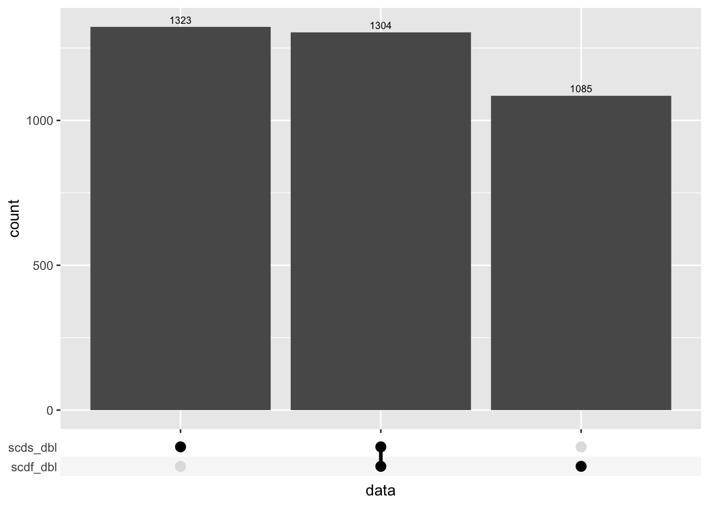
$`/Users/maksimovicjovana/Library/CloudStorage/OneDrive-PeterMac/Desktop/projects/collaborative_research/paediatric-cf-inflammation-citeseq/data/C133_Neeland_batch1/data/SCEs/C133_Neeland_batch1.doublets_called.SCE.rds`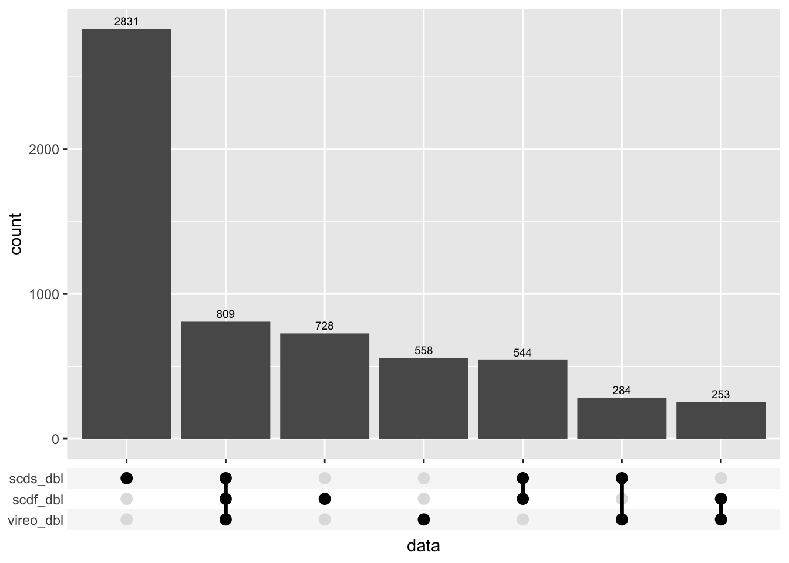
$`/Users/maksimovicjovana/Library/CloudStorage/OneDrive-PeterMac/Desktop/projects/collaborative_research/paediatric-cf-inflammation-citeseq/data/C133_Neeland_batch2/data/SCEs/C133_Neeland_batch2.doublets_called.SCE.rds`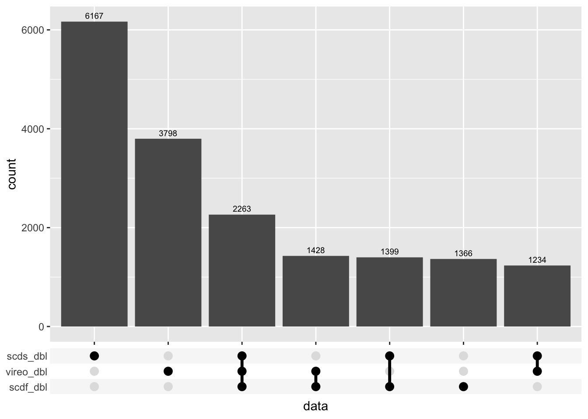
$`/Users/maksimovicjovana/Library/CloudStorage/OneDrive-PeterMac/Desktop/projects/collaborative_research/paediatric-cf-inflammation-citeseq/data/C133_Neeland_batch3/data/SCEs/C133_Neeland_batch3.doublets_called.SCE.rds`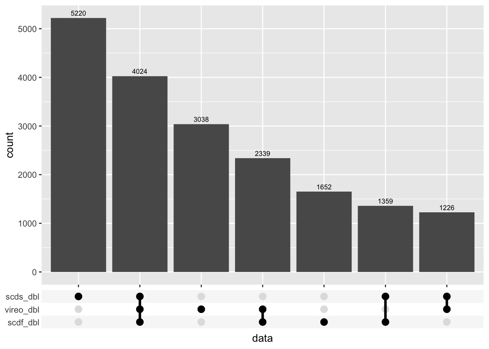
$`/Users/maksimovicjovana/Library/CloudStorage/OneDrive-PeterMac/Desktop/projects/collaborative_research/paediatric-cf-inflammation-citeseq/data/C133_Neeland_batch4/data/SCEs/C133_Neeland_batch4.doublets_called.SCE.rds`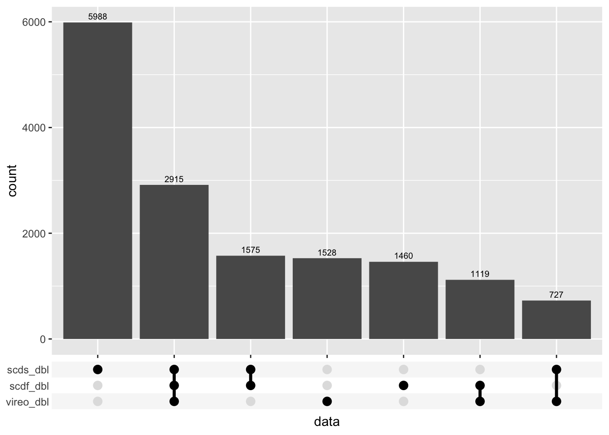
$`/Users/maksimovicjovana/Library/CloudStorage/OneDrive-PeterMac/Desktop/projects/collaborative_research/paediatric-cf-inflammation-citeseq/data/C133_Neeland_batch5/data/SCEs/C133_Neeland_batch5.doublets_called.SCE.rds`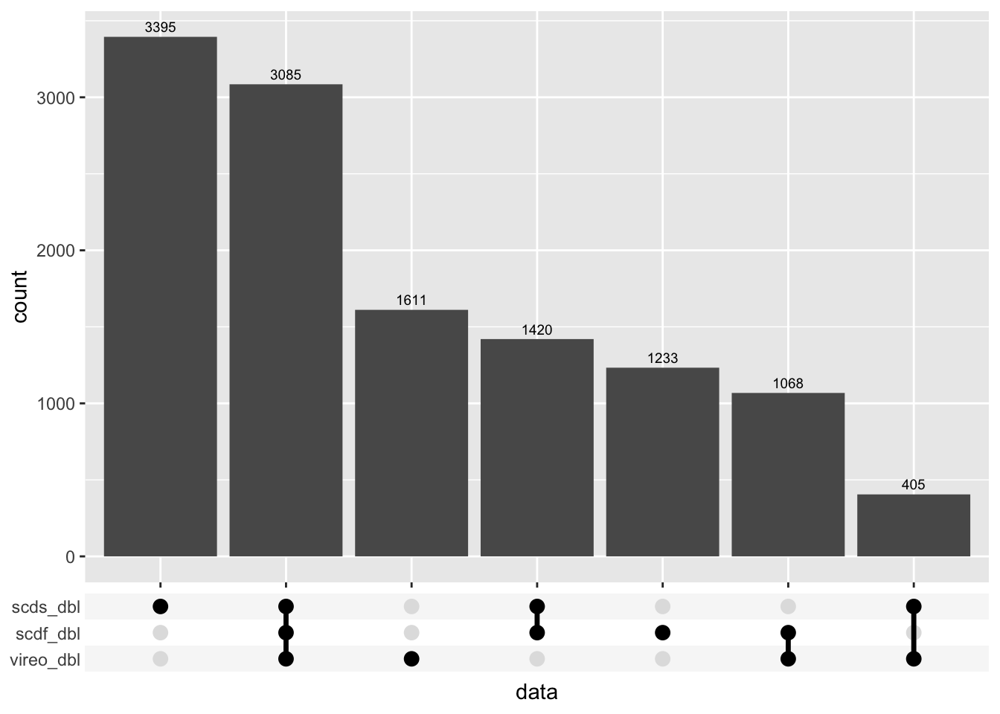
$`/Users/maksimovicjovana/Library/CloudStorage/OneDrive-PeterMac/Desktop/projects/collaborative_research/paediatric-cf-inflammation-citeseq/data/C133_Neeland_batch6/data/SCEs/C133_Neeland_batch6.doublets_called.SCE.rds`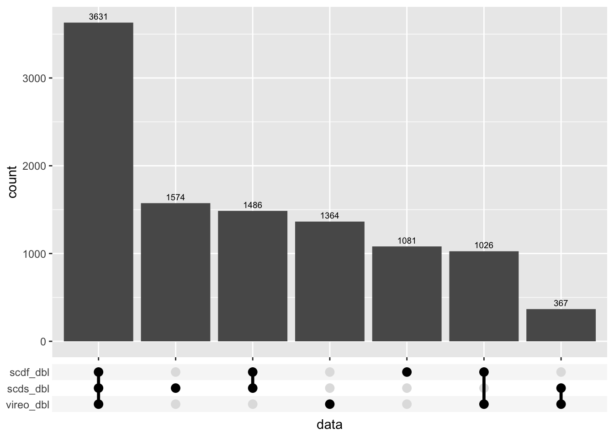
sapply(sceLst, function(sce){
sum(sce$GeneticDonor == "Doublet")/nrow(sce)*100
})/Users/maksimovicjovana/Library/CloudStorage/OneDrive-PeterMac/Desktop/projects/collaborative_research/paediatric-cf-inflammation-citeseq/data/C133_Neeland_batch0/data/SCEs/C133_Neeland_batch0.doublets_called.SCE.rds
0.000000
/Users/maksimovicjovana/Library/CloudStorage/OneDrive-PeterMac/Desktop/projects/collaborative_research/paediatric-cf-inflammation-citeseq/data/C133_Neeland_batch1/data/SCEs/C133_Neeland_batch1.doublets_called.SCE.rds
5.202044
/Users/maksimovicjovana/Library/CloudStorage/OneDrive-PeterMac/Desktop/projects/collaborative_research/paediatric-cf-inflammation-citeseq/data/C133_Neeland_batch2/data/SCEs/C133_Neeland_batch2.doublets_called.SCE.rds
23.832682
/Users/maksimovicjovana/Library/CloudStorage/OneDrive-PeterMac/Desktop/projects/collaborative_research/paediatric-cf-inflammation-citeseq/data/C133_Neeland_batch3/data/SCEs/C133_Neeland_batch3.doublets_called.SCE.rds
29.034726
/Users/maksimovicjovana/Library/CloudStorage/OneDrive-PeterMac/Desktop/projects/collaborative_research/paediatric-cf-inflammation-citeseq/data/C133_Neeland_batch4/data/SCEs/C133_Neeland_batch4.doublets_called.SCE.rds
17.182591
/Users/maksimovicjovana/Library/CloudStorage/OneDrive-PeterMac/Desktop/projects/collaborative_research/paediatric-cf-inflammation-citeseq/data/C133_Neeland_batch5/data/SCEs/C133_Neeland_batch5.doublets_called.SCE.rds
16.854731
/Users/maksimovicjovana/Library/CloudStorage/OneDrive-PeterMac/Desktop/projects/collaborative_research/paediatric-cf-inflammation-citeseq/data/C133_Neeland_batch6/data/SCEs/C133_Neeland_batch6.doublets_called.SCE.rds
17.453075 sapply(sceLst, function(sce){
table(sce$Capture)
})$`/Users/maksimovicjovana/Library/CloudStorage/OneDrive-PeterMac/Desktop/projects/collaborative_research/paediatric-cf-inflammation-citeseq/data/C133_Neeland_batch0/data/SCEs/C133_Neeland_batch0.doublets_called.SCE.rds`
A B C D
3620 4370 9129 9820
$`/Users/maksimovicjovana/Library/CloudStorage/OneDrive-PeterMac/Desktop/projects/collaborative_research/paediatric-cf-inflammation-citeseq/data/C133_Neeland_batch1/data/SCEs/C133_Neeland_batch1.doublets_called.SCE.rds`
C133_batch1_1 C133_batch1_2
10556 11414
$`/Users/maksimovicjovana/Library/CloudStorage/OneDrive-PeterMac/Desktop/projects/collaborative_research/paediatric-cf-inflammation-citeseq/data/C133_Neeland_batch2/data/SCEs/C133_Neeland_batch2.doublets_called.SCE.rds`
C133_batch2_1 C133_batch2_2
21248 24463
$`/Users/maksimovicjovana/Library/CloudStorage/OneDrive-PeterMac/Desktop/projects/collaborative_research/paediatric-cf-inflammation-citeseq/data/C133_Neeland_batch3/data/SCEs/C133_Neeland_batch3.doublets_called.SCE.rds`
C133_batch3_1 C133_batch3_2
29156 28882
$`/Users/maksimovicjovana/Library/CloudStorage/OneDrive-PeterMac/Desktop/projects/collaborative_research/paediatric-cf-inflammation-citeseq/data/C133_Neeland_batch4/data/SCEs/C133_Neeland_batch4.doublets_called.SCE.rds`
C133_batch4_1 C133_batch4_2
22702 23058
$`/Users/maksimovicjovana/Library/CloudStorage/OneDrive-PeterMac/Desktop/projects/collaborative_research/paediatric-cf-inflammation-citeseq/data/C133_Neeland_batch5/data/SCEs/C133_Neeland_batch5.doublets_called.SCE.rds`
C133_batch5_1 C133_batch5_2
22097 22618
$`/Users/maksimovicjovana/Library/CloudStorage/OneDrive-PeterMac/Desktop/projects/collaborative_research/paediatric-cf-inflammation-citeseq/data/C133_Neeland_batch6/data/SCEs/C133_Neeland_batch6.doublets_called.SCE.rds`
C133_batch6_1 C133_batch6_2
23468 23017 p <- lapply(sceLst, function(sce){
if(!"sum" %in% colnames(colData(sce))){
## add per cell QC metrics if they are missing
sce <- addPerCellQC(sce)
}
colData(sce) %>%
data.frame %>%
mutate(scds = ifelse(hybrid_call, "Doublet", "Singlet"),
scdf = ifelse(scDblFinder.class == "doublet", "Doublet", "Singlet")) %>%
rownames_to_column(var = "cell") %>%
mutate(vireo_dbl = (GeneticDonor == "Doublet"),
scds_dbl = (scds == "Doublet"),
scdf_dbl = (scdf == "Doublet")) %>%
pivot_longer(cols = c(vireo_dbl, scds_dbl, scdf_dbl),
names_to = "method") -> dat
p1 <- ggplot(dat, aes(x = method, y = sum, fill = value)) +
geom_violin(scale = "count") +
scale_y_log10() +
labs(fill = "Doublet")
p2 <- ggplot(dat, aes(x = method, y = detected, fill = value)) +
geom_violin(scale = "count") +
labs(fill = "Doublet")
(p1 | p2) + plot_layout(guides = "collect")
})
p$`/Users/maksimovicjovana/Library/CloudStorage/OneDrive-PeterMac/Desktop/projects/collaborative_research/paediatric-cf-inflammation-citeseq/data/C133_Neeland_batch0/data/SCEs/C133_Neeland_batch0.doublets_called.SCE.rds`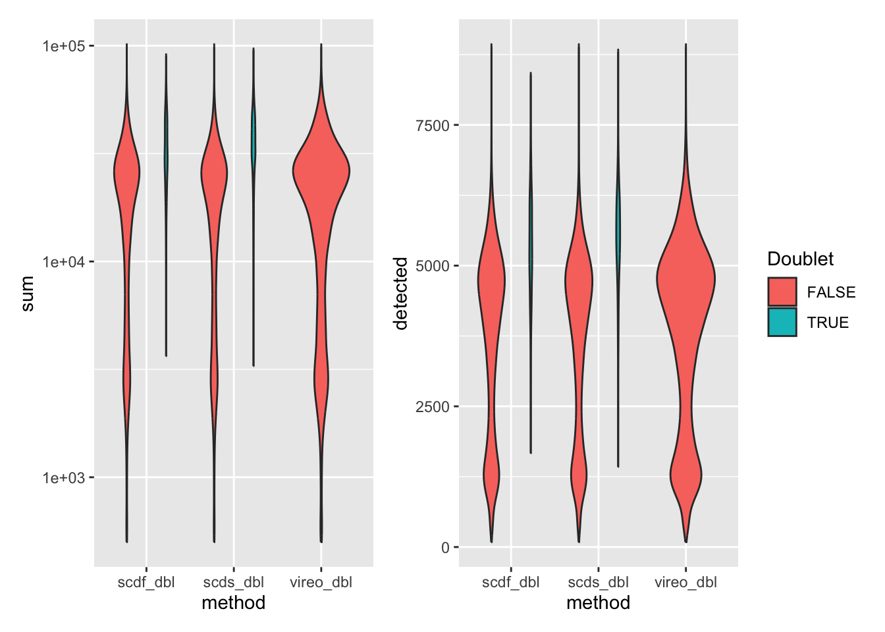
$`/Users/maksimovicjovana/Library/CloudStorage/OneDrive-PeterMac/Desktop/projects/collaborative_research/paediatric-cf-inflammation-citeseq/data/C133_Neeland_batch1/data/SCEs/C133_Neeland_batch1.doublets_called.SCE.rds`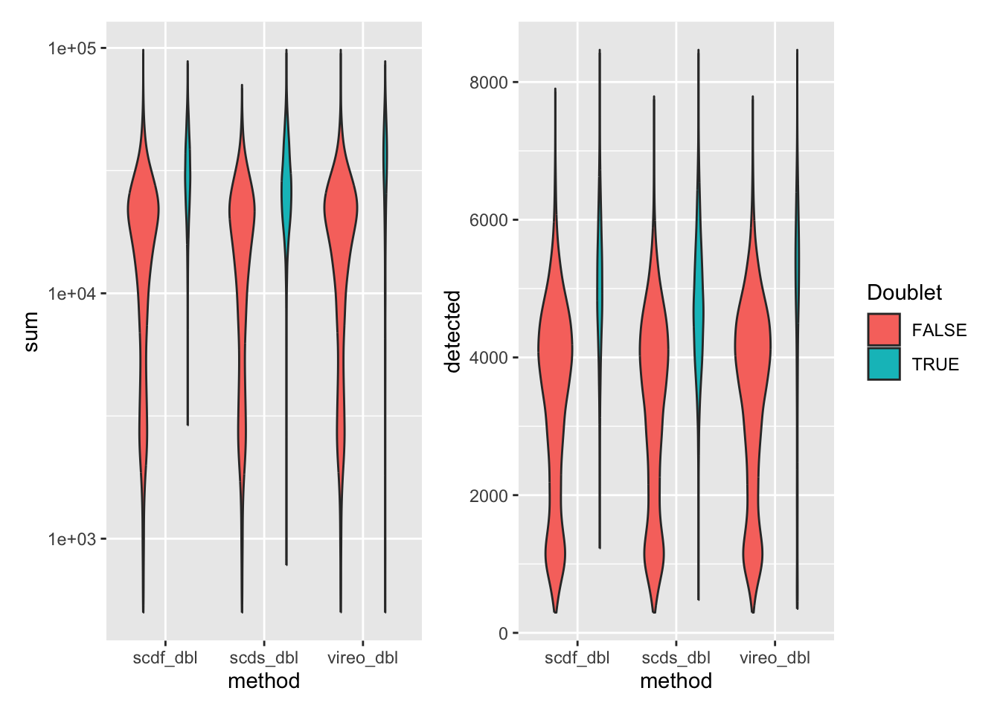
$`/Users/maksimovicjovana/Library/CloudStorage/OneDrive-PeterMac/Desktop/projects/collaborative_research/paediatric-cf-inflammation-citeseq/data/C133_Neeland_batch2/data/SCEs/C133_Neeland_batch2.doublets_called.SCE.rds`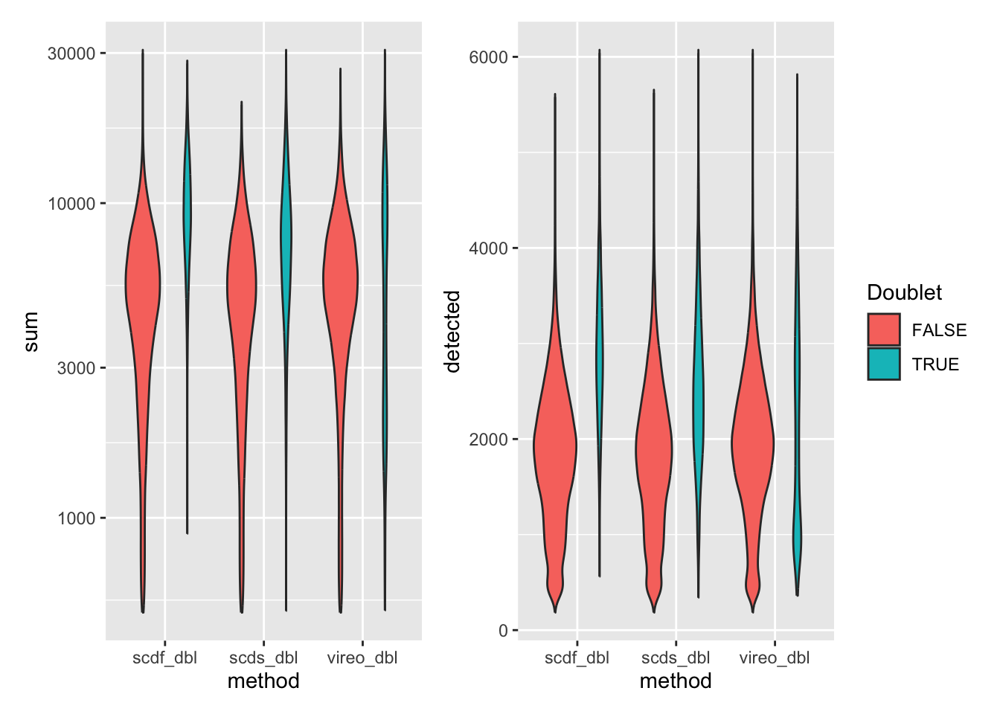
$`/Users/maksimovicjovana/Library/CloudStorage/OneDrive-PeterMac/Desktop/projects/collaborative_research/paediatric-cf-inflammation-citeseq/data/C133_Neeland_batch3/data/SCEs/C133_Neeland_batch3.doublets_called.SCE.rds`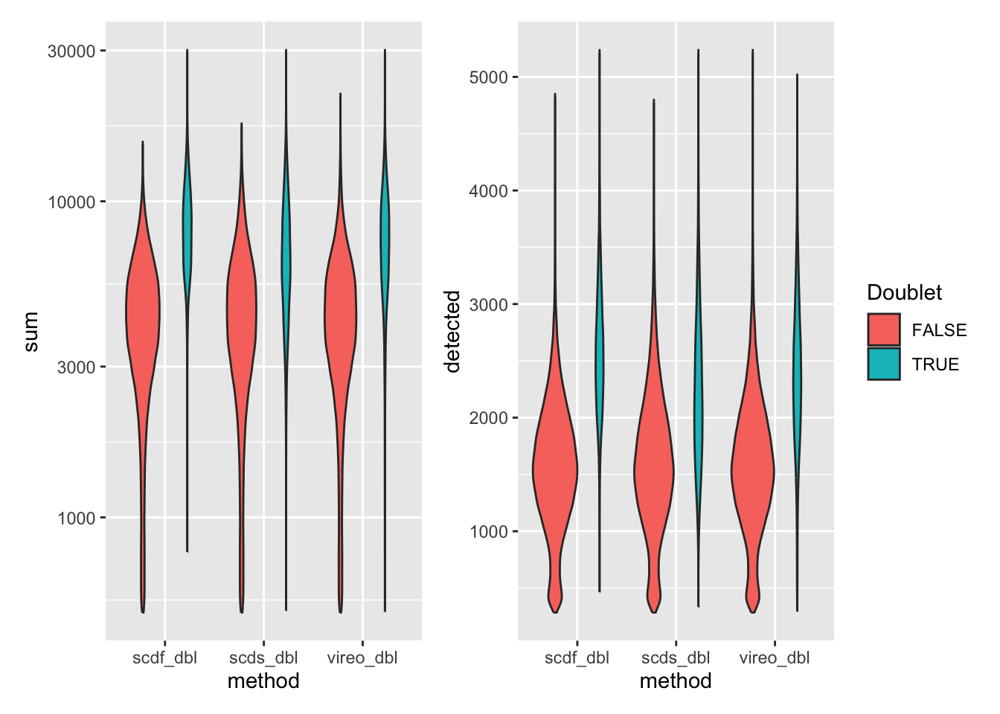
$`/Users/maksimovicjovana/Library/CloudStorage/OneDrive-PeterMac/Desktop/projects/collaborative_research/paediatric-cf-inflammation-citeseq/data/C133_Neeland_batch4/data/SCEs/C133_Neeland_batch4.doublets_called.SCE.rds`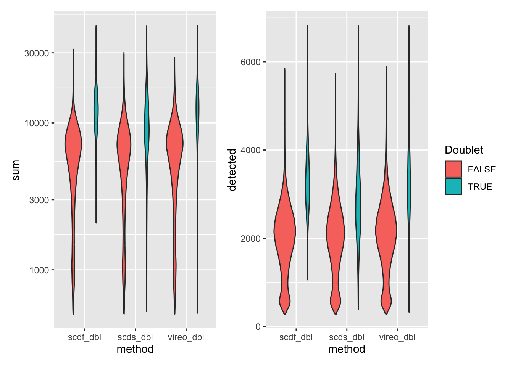
$`/Users/maksimovicjovana/Library/CloudStorage/OneDrive-PeterMac/Desktop/projects/collaborative_research/paediatric-cf-inflammation-citeseq/data/C133_Neeland_batch5/data/SCEs/C133_Neeland_batch5.doublets_called.SCE.rds`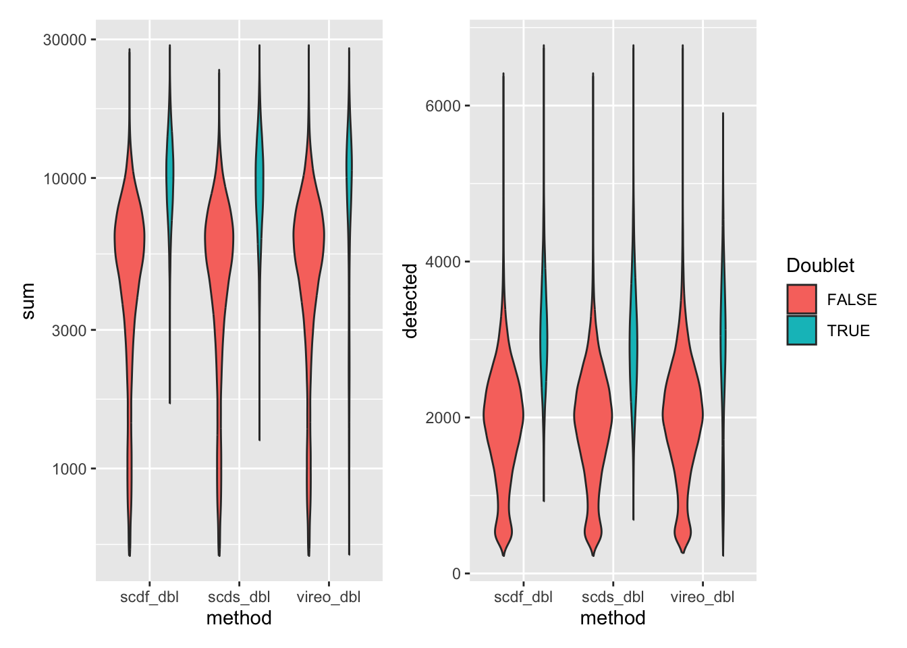
$`/Users/maksimovicjovana/Library/CloudStorage/OneDrive-PeterMac/Desktop/projects/collaborative_research/paediatric-cf-inflammation-citeseq/data/C133_Neeland_batch6/data/SCEs/C133_Neeland_batch6.doublets_called.SCE.rds`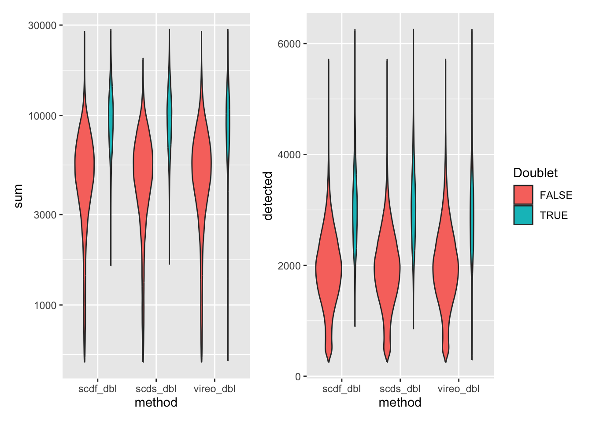
batches <- str_extract(names(sceLst), "batch[0-6]")
sapply(1:length(sceLst), function(i){
out <- here("data",
paste0("C133_Neeland_", batches[i]),
"data",
"SCEs",
glue("C133_Neeland_{batches[i]}.doublets_called.SCE.rds"))
if(!file.exists(out)) saveRDS(sceLst[[i]], out)
fs::file_chmod(out, "664")
if(any(str_detect(fs::group_ids()$group_name,
"oshlack_lab"))) fs::file_chown(out,
group_id = "oshlack_lab")
})[[1]]
NULL
[[2]]
NULL
[[3]]
NULL
[[4]]
NULL
[[5]]
NULL
[[6]]
NULL
[[7]]
NULL
sessionInfo()R version 4.3.3 (2024-02-29)
Platform: aarch64-apple-darwin20 (64-bit)
Running under: macOS 15.5
Matrix products: default
BLAS: /Library/Frameworks/R.framework/Versions/4.3-arm64/Resources/lib/libRblas.0.dylib
LAPACK: /Library/Frameworks/R.framework/Versions/4.3-arm64/Resources/lib/libRlapack.dylib; LAPACK version 3.11.0
locale:
[1] en_US.UTF-8/en_US.UTF-8/en_US.UTF-8/C/en_US.UTF-8/en_US.UTF-8
time zone: Australia/Melbourne
tzcode source: internal
attached base packages:
[1] stats4 stats graphics grDevices datasets utils methods
[8] base
other attached packages:
[1] ggupset_0.3.0 scMerge_1.18.0
[3] scds_1.18.0 scDblFinder_1.16.0
[5] scater_1.30.1 scran_1.30.2
[7] scuttle_1.12.0 SingleCellExperiment_1.24.0
[9] SummarizedExperiment_1.32.0 Biobase_2.62.0
[11] GenomicRanges_1.54.1 GenomeInfoDb_1.38.6
[13] IRanges_2.36.0 S4Vectors_0.40.2
[15] BiocGenerics_0.48.1 MatrixGenerics_1.14.0
[17] matrixStats_1.2.0 patchwork_1.3.1
[19] glue_1.8.0 here_1.0.1
[21] lubridate_1.9.3 forcats_1.0.0
[23] stringr_1.5.1 dplyr_1.1.4
[25] purrr_1.0.2 readr_2.1.5
[27] tidyr_1.3.1 tibble_3.2.1
[29] ggplot2_3.5.2 tidyverse_2.0.0
[31] BiocStyle_2.30.0 workflowr_1.7.1
loaded via a namespace (and not attached):
[1] batchelor_1.18.1 splines_4.3.3
[3] later_1.3.2 BiocIO_1.12.0
[5] bitops_1.0-7 pROC_1.18.5
[7] XML_3.99-0.16.1 rpart_4.1.23
[9] lifecycle_1.0.4 StanHeaders_2.32.5
[11] edgeR_4.0.15 rprojroot_2.0.4
[13] processx_3.8.3 lattice_0.22-5
[15] MASS_7.3-60.0.1 backports_1.4.1
[17] magrittr_2.0.3 limma_3.58.1
[19] Hmisc_5.1-1 sass_0.4.10
[21] rmarkdown_2.29 jquerylib_0.1.4
[23] yaml_2.3.8 metapod_1.10.1
[25] httpuv_1.6.14 pkgbuild_1.4.3
[27] RColorBrewer_1.1-3 ResidualMatrix_1.12.0
[29] abind_1.4-5 zlibbioc_1.48.0
[31] sfsmisc_1.1-17 RCurl_1.98-1.14
[33] nnet_7.3-19 git2r_0.33.0
[35] GenomeInfoDbData_1.2.11 inline_0.3.19
[37] ggrepel_0.9.5 densEstBayes_1.0-2.2
[39] irlba_2.3.5.1 cvTools_0.3.2
[41] dqrng_0.3.2 DelayedMatrixStats_1.24.0
[43] codetools_0.2-19 DelayedArray_0.28.0
[45] tidyselect_1.2.1 farver_2.1.1
[47] ScaledMatrix_1.10.0 viridis_0.6.5
[49] base64enc_0.1-3 GenomicAlignments_1.38.2
[51] jsonlite_1.8.8 BiocNeighbors_1.20.2
[53] Formula_1.2-5 bbmle_1.0.25.1
[55] tools_4.3.3 startupmsg_0.9.6.1
[57] Rcpp_1.0.12 gridExtra_2.3
[59] SparseArray_1.2.4 mgcv_1.9-1
[61] xfun_0.52 loo_2.6.0
[63] withr_3.0.0 numDeriv_2016.8-1.1
[65] BiocManager_1.30.22 fastmap_1.1.1
[67] bluster_1.12.0 fansi_1.0.6
[69] callr_3.7.3 caTools_1.18.2
[71] digest_0.6.34 rsvd_1.0.5
[73] timechange_0.3.0 R6_2.5.1
[75] colorspace_2.1-0 reldist_1.7-2
[77] gtools_3.9.5 utf8_1.2.4
[79] generics_0.1.3 renv_1.1.4
[81] data.table_1.15.0 robustbase_0.99-2
[83] rtracklayer_1.62.0 httr_1.4.7
[85] htmlwidgets_1.6.4 S4Arrays_1.2.0
[87] whisker_0.4.1 pkgconfig_2.0.3
[89] gtable_0.3.6 XVector_0.42.0
[91] htmltools_0.5.8.1 ruv_0.9.7.1
[93] scales_1.3.0 knitr_1.50
[95] rstudioapi_0.15.0 tzdb_0.4.0
[97] rjson_0.2.21 curl_5.2.0
[99] nlme_3.1-164 checkmate_2.3.1
[101] bdsmatrix_1.3-6 M3Drop_1.28.0
[103] cachem_1.0.8 KernSmooth_2.23-22
[105] parallel_4.3.3 vipor_0.4.7
[107] foreign_0.8-86 restfulr_0.0.15
[109] proxyC_0.3.4 pillar_1.9.0
[111] grid_4.3.3 vctrs_0.6.5
[113] gplots_3.1.3.1 promises_1.2.1
[115] BiocSingular_1.18.0 beachmat_2.18.1
[117] cluster_2.1.6 beeswarm_0.4.0
[119] htmlTable_2.4.2 evaluate_0.23
[121] mvtnorm_1.2-4 cli_3.6.5
[123] locfit_1.5-9.8 compiler_4.3.3
[125] Rsamtools_2.18.0 rlang_1.1.6
[127] crayon_1.5.2 rstantools_2.4.0
[129] labeling_0.4.3 ps_1.7.6
[131] getPass_0.2-4 plyr_1.8.9
[133] fs_1.6.6 ggbeeswarm_0.7.2
[135] rstan_2.32.5 stringi_1.8.3
[137] QuickJSR_1.1.3 viridisLite_0.4.2
[139] BiocParallel_1.36.0 munsell_0.5.0
[141] Biostrings_2.70.2 V8_6.0.4
[143] Matrix_1.6-5 hms_1.1.3
[145] sparseMatrixStats_1.14.0 statmod_1.5.0
[147] igraph_2.0.1.1 RcppParallel_5.1.7
[149] bslib_0.6.1 DEoptimR_1.1-3
[151] xgboost_1.7.7.1 distr_2.9.3